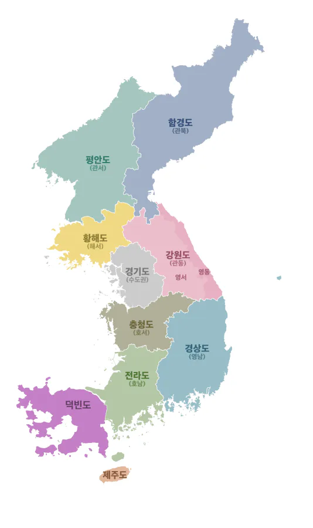

| 북부 | 관북 | 라선 · 함북 · 함남 · 량강 | |
|---|---|---|---|
| 관서 | 평양 · 남포 · 평북 · 평남 · 자강 | ||
| 해서 | 개성 · 황북 · 황남 | ||
| 중부 |
강원(관동) ( 영동 · 영서 ) |
강원 | |
| 수도권(경기) | 서울 · 인천 · 경기 | ||
| 충청(호서) | 대전 · 세종 · 충북 · 충남 | ||
| 남부 | 영남 | 부산 · 대구 · 울산 · 경북 · 경남 | |
| 호남 | 광주 · 전북 · 전남 | ||
| 제주 | 제주 | ||
| 덕빈 | 효빈 · 덕북 · 덕남 | ||
|
▪ 근거: <대한민국 국가지도집 I 2019> 국토교통부 국토지리정보원 발간 ▪ 강원·충청: 각각 관동·호서라는 이칭이 있음 ▪ 해서·충청: 전통적으로 각각 중부와 남부 지방으로 분류되기도 함 ▪ 개성: 본래 경기도 소속이나 분단으로 인해 황해도 소속이 됨 ▪ 덕빈: 과거 한반도 서남부에 존재했던 거대 행정구역(덕빈도)의 관할 구역이었으며, 효빈·덕북·덕남을 아우름. |
|||

- 1. 개요
- 2. 명칭
- 3. 역사
- 4. 인구
- 5. 범위
- 6. 특징
- 7. 교육
- 7.1. 대학
- 8. 정치
- 8.1. 3표의 비극과 광기의 철도 말살 (2006~2007)
- 8.2. 심판과 민주당 강세 지형의 고착화
- 8.3. 덕빈북도의 낙동강 전선 (보수 텃밭)
- 8.4. 덕빈남도의 양극화: 러스트 벨트와 소멸 지역
- 9. 덕빈도 지역을 본관으로 한 성씨
- 10. 세종실록지리지에서의 설명
- 11. 둘러보기
1. 개요
덕빈도(德彬道)는 한반도 서남부, 호남(전라도)의 남서쪽 해상과 연안에 툭 튀어나와 굳건히 자리 잡은 거대한 지리적 권역이자 과거 한반도의 주요 행정구역이다. 현재의 효빈광역시, 덕빈북도, 덕빈남도를 통틀어 이르는 전통적인 명칭이다.
조선 건국 초기부터 한반도는 북부 3도, 중부 3도, 남부 3도(경상, 전라, 덕빈)로 나뉘는 당당한 '조선 구도(九道)' 체제로 편제되어 왔다. 지도를 보면 알 수 있듯 전라도나 경상도에 맞먹는 엄청난 크기의 영토를 자랑하며, 복잡한 해안선과 수많은 부속 도서를 거느리고 있어 경제적, 군사적으로 결코 무시할 수 없는 핵심 행정구역이었다. 국사 시간에 졸았던 사람들이 가끔 한반도를 조선 8도라고 착각하기도 하는데, 덕빈도 출신 어르신들 앞에서 그런 소리를 했다간 "우리 덕빈도는 워따 팔아묵었냐"며 불호령을 듣기 십상이다.
현대에 들어서는 단일 행정구역으로서의 기능을 상실하고 1896년 15도제에 의한 남·북 분도(分道) 및 1981년 직할시(광역시) 독립을 거쳤기 때문에, 문서상으로는 정치·경제·생활권역을 묶어 부르는 '덕빈권' 혹은 '효덕권'이라는 용어가 더 자주 쓰인다.
2. 명칭
조선 시대 행정구역 명명법의 국룰(각 도의 가장 큰 두 고을의 앞 글자를 따오는 방식)을 철저히 따랐다. 당시 도내에서 가장 융성했던 두 목(牧)이자 관찰사가 파견되던 주요 거점이었던 남부의 덕주(德州)와 북부의 빈주(彬州)의 앞 글자를 따서 '덕빈도(德彬道)'가 되었다.
[참고] 여담으로 현재 덕빈권의 중심지이자 거대 도시인 효빈(孝彬)은 과거 빈주나 덕주에 속하지 않은 독자적인 고을(효빈현)이었다. 예로부터 나라에서 정표를 내린 효자비(孝子碑)가 유독 많이 세워져 '효(孝)' 자를 하사받았고, 인근의 큰 고을인 빈주(彬州)와 나란히 번성하라는 의미에서 '빈(彬)' 자를 더해 '효빈'이라는 지명이 탄생했다는 역사적 유래가 전해진다. 현직 시장 이름도 박효빈이라 시장이 도시 이름을 지었다는 터무니없는 루머가 있지만, 시장이 100살이 넘지 않은 이상 물리적으로 불가능하다.
3. 역사
한반도 서남부를 호령하는 거대 권역답게, 52개의 뼈대 있는 고을들이 수백 년간 서로 권력을 다투고 뺏으며 피 튀기는 행정구역 개편의 역사를 써 내려갔다. 왕조의 변덕, 이촌향도, 그리고 철도와 자본주의가 지도를 어떻게 갈기갈기 찢어놓았는지 보여주는 생생한 박물관이다.
3.1. 고대 ~ 고려 시대
원삼국시대 마한(馬韓)의 영토에 속해 있었으며, 덕북 평야와 남해안을 중심으로 여러 소국들이 난립해 있었다. 특히 서해안과 남해안의 복잡한 해안선을 이용해 일찍부터 해상 무역을 주도하는 해상 세력들이 존재했던 것으로 고고학계는 추정한다.
삼국시대에는 백제(百濟)가 마한을 복속시키면서 자연스럽게 백제의 영토로 편입되었다. 이 시기부터 마진이나 덕주 등지에 군사적 방어와 지방 통치를 위한 성곽들이 세워지기 시작했으며, 중국과 일본을 잇는 백제의 해상 실크로드 기착지로서 중요한 역할을 담당했다.
통일신라 시대에는 전국을 9주 5소경으로 개편할 때, 덕빈 지역은 광활한 영토 특성상 전라도 지역의 무주(武州) 관할에 속하거나 인근 소경의 영향을 복합적으로 받았다. 해상 활동을 장악했던 장보고 세력의 영향권에 들기도 했다. 이후 후삼국시대 견훤이 완산주에 후백제를 건국하면서 가장 먼저 후백제의 깃발을 꽂은 지역이 되었으나, 해상 무역의 이점을 노린 왕건의 수군이 나주를 거쳐 이 지역의 해안(현 방산, 비천 일대)을 공략하면서 치열한 해전이 벌어지기도 했다.
고려 시대에는 전라도의 남부 지역에 파편화된 현(縣)과 수군 진보(鎭堡) 형태로 속해 있었다. 고려 말, 왜구(Wokou)의 침략이 덕빈 남서해안의 복잡한 섬과 내해를 타고 극심해지자, 마진읍성 등 해안가를 따라 거대한 석성들이 대거 축조되었다.
3.2. 조선 시대 (52개 고을의 리즈 시절)
조선 태종 때 해상 방어와 조세 운송의 중요성이 커지면서 전라도에서 완전히 분리되어 '덕빈도(德彬道)'라는 독자적인 도(道)로 승격, 마침내 '조선 9도' 체제를 완성했다. 수군 제독이 머무는 덕빈수영(德彬水營)이 설치되었고, 임진왜란 당시에는 이순신 함대에 막대한 군량미와 전선을 보급했다.
조선시대 덕빈도는 무려 52개의 고을이 바글바글하게 모여 있던 지방행정의 핫플레이스였다. 조선 전기에는 덕주(德州)가 도 관아를 차지하며 절대 1짱 부(府)로 군림했으나, 조선 후기 덕주가 정치적 사건으로 잠시 강등당한 틈을 타 빈주(彬州)가 도 관아를 뺏어오며 권역의 패권이 이동하는 다이내믹한 역사를 겪었다.
| 조선시대 덕빈도 52개 고을 체제 (9도제) | ||
|---|---|---|
| 읍격 (등급) | 조선 전기 | 조선 후기 (변화) |
| 부 (府) | 덕주 (도관아) | 빈주 (도관아 뺏어옴), 덕주 |
| 목 (牧) | 빈주, 율주, 강주, 분주 | 율주, 강주, 낙주(승격), 분주 |
| 대도호부 | 천주 | 천주 (굳건한 근본) |
| 도호부 | 서해, 방산, 관곡, 덕현, 효빈 | 서해, 풍영, 덕현, 방산, 효빈, 관곡 |
| 군 (郡) | 낙산, 약산, 저천, 상안, 낭원, 반양, 송원, 산백, 풍영, 하성, 인곡, 매성, 석창, 치원, 군천, 운진 | 약산, 저천, 상안, 낭원, 반양, 송원, 산백, 하성, 인곡, 매성, 석창, 치원, 군천, 운진, 탄성 |
| 현령 / 현감 |
현령: 전양, 모제, 탄성, 토진, 압일, 마성, 비천 현감: 기도, 선곡, 봉월, 원강, 인자, 태서, 산진, 두원, 원안, 곡천(고포 포함), 진적, 팔원, 경진, 진원, 괴성, 정원, 수석, 상곤 |
현령: 전양, 모제, 토진, 압일, 마성, 비천, 정원 현감: 기도, 선곡, 봉월, 원강, 인자, 태서, 산진, 두원, 원안, 곡천(고포 포함), 진적, 팔원, 경진, 진원, 괴성, 수석, 상곤 |
3.3. 개항기 및 대한제국 (대혼돈의 26부제와 남북 분도)
1895년 갑오개혁의 일환으로 전국이 26부제로 찢어지면서 덕빈도 역시 빈주부, 천주부, 덕주부 3개 부(府)로 갈라지는 대혼돈을 맞이했다. 읍격 대신 1~5등군으로 서열이 매겨졌다. 이때 현재 300만 거대 도시인 효빈광역시는 천주부의 일개 1등군에 불과했다.
불과 1년 만인 1896년, 13도제(15도제)가 시행되면서 덕빈도 역사상 최초로 덕빈북도와 덕빈남도로 남북 분단(?)이 이루어졌다.
| 빈주부 | 1등: 빈주 | 2등: 서해, 풍영, 상안 | 3등: 탄성, 선곡, 강주, 군천, 저천, 태서 | 4등: 송원, 압일, 전양, 신득, 반양, 모제 | 5등: 기도, 산진 |
|---|---|
| 천주부 | 1등: 천주, 효빈 | 2등: 방산 | 3등: 약산, 비천 | 4등: 낭원, 산백, 치원, 경진, 매성, 율주 | 5등: 봉월, 토진, 원강, 석창, 대흥, 괴성, 덕현 |
| 덕주부 | 1등: 덕주 | 2등: 낙주, 하성 | 3등: 두원, 인곡, 마성, 정원, 진적 | 4등: 곡천, 운진, 원안, 상곤, 팔원, 분주, 진원, 관곡, 수석 | 5등: 고포 |
| 덕빈북도 (29개 군) | 효빈, 빈주, 기도, 약산, 선곡, 치원, 천주, 낭원, 저천, 강주, 상안, 덕현, 모제, 서해, 전양, 군천, 반양, 원강, 송원, 탄성, 봉월, 인자, 토진, 산백, 풍영, 태서, 압일, 산진, 신득 |
|---|---|
| 덕빈남도 (24개 군) | 낙주, 덕주, 방산, 마성, 비천, 하성, 관곡, 분주, 인곡, 원안, 두원, 매성, 석창, 운진, 곡천, 고포, 진적, 팔원, 경진, 진원, 괴성, 정원, 수석, 상곤, 율주 |
3.4. 일제강점기 (1914년 부군면 통폐합의 대숙청)
1914년 조선총독부에 의해 자행된 대대적인 부군면 통폐합은 덕빈권의 지리를 영원히 바꿔버린 대격변이었다. 수백 년간 이어져 온 53개의 군들이 행정 편의주의적 자와 컴퍼스질에 의해 무자비하게 34개의 부·군으로 칼질당했다.
이 과정에서 탄성군은 효빈, 약산, 선곡에 갈기갈기 찢겨 잡아먹히는 비운을 맞았고, 항만지역인 강주부와 배후 농촌인 강산군이 분리되는 수탈적 이원화가 자행되었다. 반면 다른 고을들이 이리저리 흡수되고 퓨전 명칭(전산, 마진, 하정 등)으로 변할 때, 오직 덕현군만이 남의 땅을 탐하지도 뺏기지도 않고 조선시대 원형을 100% 보존하는 진정한 생존왕의 위엄을 보여주었다.
| 1914년 부군면 통폐합 주요 내역 (대숙청) | ||
|---|---|---|
| 통합 후 (1914) | 병합된 기존 고을 | 비고 및 특이사항 |
| 효빈군 | 효빈군 + 탄성군(일부) | 훗날 광역시 성장의 첫 영토 확장 |
| 약산군 | 약산군 + 원강군 + 탄성군(일부) | 탄성군을 찢어 효빈/선곡과 나눠 가짐 |
| 빈주군 | 빈주군 + 송원군 | |
| 강주부 / 강산군 | 강주부(항만) / 강주부(잔여) + 풍영군 | 항구(부)와 배후 농촌(군)의 수탈적 분리 |
| 전산군 (신설) | 전양군 + 산진군 | 두 고을 앞 글자 퓨전 명칭 |
| 마진군 (신설) | 마성군 + 진원군 | 두 고을 앞 글자 퓨전 명칭 |
| 하정군 (신설) | 하성군 + 정원군 | 두 고을 앞 글자 퓨전 명칭 |
| 관수군 (신설) | 관곡군 + 수석군 | 두 고을 앞 글자 퓨전 명칭 |
| 매성군 | 매성군 + 율주군(대부분) | 율주목의 근본을 집어삼킴 |
| 반양군 | 반양군 + 빈주군 일부(삽곡, 복구 등) | 훗날 이 땅(삽곡)이 상권을 역전함 |
| 덕현군 (생존) | 덕현군 | 1914년 이전과 영역 100% 완전 동일 |
| 기타 1:1 병합 | 선곡(+탄성), 치원(+봉월), 천주(+인자), 낭원(+토진), 저천(+산백), 상안(+태서), 모제(+송원 일부), 서해(+압일), 군천(+신득), 낙주(+진적), 덕주(+팔원 북부), 방산(+경진), 비천(+괴성), 분주(+팔원 남부), 석창(+율주 일부) | |
| 기타 단독 존속 | 기도, 인곡, 운진, 곡천, 고포, 두원, 원안(+상곤) | |
3.5. 현대 (효빈광역시의 독립과 권역의 완성)
대한민국 정부 수립 이후, 덕빈북도의 항만 물류와 중화학 공업을 쓸어 담으며 폭발적으로 성장하던 효빈시가 1981년 효빈직할시로 승격하며 덕빈북도에서 완전히 독립해 나갔다. 이때 세수 1위 도시를 뺏긴 덕빈북도는 배를 잡고 뒹굴었다 카더라. 이후 1995년 전국적인 도농복합의 물결을 타고 거대한 효빈광역시 체제가 완성되었다.
현재 행정구역으로서의 '덕빈도'는 소멸하였으나, 역사적 뿌리와 경제·생활권을 공유하는 이 거대한 권역은 여전히 덕빈권(효덕권)이라 불리며, 수도권과 동남권에 이은 대한민국 제3의 인구 블랙홀(총인구 약 850만 명)로 위상을 떨치고 있다.
4. 인구
"지방 소멸? 그게 뭐죠? 여기는 남서부 인구의 블랙홀입니다."
2025년 기준 덕빈도(덕빈권) 전체 권역의 인구는 약 849만 4천 명에 달한다.
수도권(서울/경기/인천), 동남권(부울경)에 이은 명실상부 대한민국 제3의 거대 광역 권역이다. 특히 효빈광역시라는 300만 급 맏형이 버티고 있고, 빈주시(83만), 천주시(52만), 덕주시(52만) 등 중견 도시들이 든든하게 받쳐주고 있어 지방 소멸의 파도를 그나마 가장 잘 방어해내고 있는 권역으로 꼽힌다.
5. 범위
현행 행정구역 기준으로 다음의 광역자치단체들을 포괄한다.
6. 특징
6.1. 지리
지형을 보자면 덕빈도의 지정학적 위치가 얼마나 압도적이고 사기적인지 단번에 알 수 있다. 북쪽으로는 끝이 보이지 않는 광활한 '덕북 평야'가 펼쳐져 곡창지대를 이루고, 남쪽과 동쪽으로는 소백산맥에서 뻗어 나온 험준한 산맥이 병풍처럼 호남과의 경계를 가른다. 전체적으로 리아스식 해안의 극치를 보여주어 내해(內海)와 만(灣)이 수도 없이 많으며, 이는 효빈항이나 비천항, 운진항 같은 천혜의 무역/군사 항구들을 발달시켰다.
6.2. 동서로 위치한 충남/충북 (기묘한 남북 분할)
이름은 덕빈북도, 덕빈남도로 나뉘어 있지만, 실제 지도를 보면 충청도(충북-동, 충남-서)처럼 '서쪽의 덕빈북도'와 '동쪽의 덕빈남도'로 동서(東西) 분할이 이루어져 있다. 한국지리 수험생들의 영원한 오답 유도 구간.
명칭이 남북인 이유는 서부(덕북)에 권역 전체의 최북단이 뾰족하게 솟아있고, 동부(덕남)에 최남단 곶(岬)이 위치해 있어 이 끝점들을 기준으로 삼았기 때문이다. 실질적인 생활권과 지형은 동서로 쪼개져 있다.
6.3. 군사
"서해와 남해, 하늘과 땅을 모두 지키는 군사적 요충지."
- 해군: 서해 쪽 방산시에는 제2함대 방산기지전대가 주둔하며, 남해 쪽 운진군에는 제3함대 운진방어전대가 주둔한다. 덕분에 휴가철만 되면 하얀 제복을 입은 수병들이 시내를 점령한다.
- 공군 & 육군: 효빈 안천구에 공군 39비행단이 주둔하며, 육군은 제38보병사단(쌍용부대)과 제71사단 등이 향토 방위를 책임진다.
6.4. 사투리
전라도와 충청도의 경계에 있어 사투리가 오묘하게 섞여 있다. 전라도 특유의 걸걸함보다는 말끝이 더 늘어지고 둥글둥글한 편이다. 말끝을 "~유"와 "~잉"을 섞어 써서, 타지 사람이 들으면 충청도인지 전라도인지 헷갈려한다. 젊은 층은 효빈시의 영향으로 서울말과 비슷한 '효빈 표준어'를 쓰지만, 나이 든 사람에게 전라도 사람이냐고 물으면 "우리가 왜 거그 사람인디? 우린 덕빈인디?" 하고 정색하며 사투리 검증이 들어간다.
6.5. 상업
효빈광역시의 중앙로, 고송신도시, 청엽지구, 평당신도시는 밤낮없이 돌아가는 상업의 심장이다. 덕빈북도는 빈주시 천조신도시가 거대 쇼핑의 블랙홀 역할을 하고, 덕빈남도는 덕주시 조전구가 상업을 주도한다.
6.6. 특산물
서해 갯벌, 남해 청정 바다, 덕북 대평야가 콜라보를 이뤄 식재료의 천국이다. 덕주 곰탕, 상다리가 부러지는 낙주 쌀밥 정식, 호불호가 갈리지만 중독성 강한 운진 멸치쌈밥이 유명하다. 항구 쪽으로는 군천 대게·킹크랩이 대박을 쳤고, 화교 문화가 융합된 효빈식 해물 짬뽕은 전국구 맛집으로 통한다.
6.7. 종교
과거 통일신라와 고려 시대부터 명산과 섬 곳곳에 지어진 거대 전통 사찰들이 불교의 명맥을 굳건히 지키고 있다. 동시에 근대 개항기 이후 효빈항 등을 통해 들어온 개신교와 가톨릭 세력이 구도심을 중심으로 거대한 성당과 교회를 세워, 전통 종교와 현대 기독교 세력이 팽팽하게 공존하는 독특한 종교 지형을 띤다.
6.8. 교통
6.8.1. 철도
"도로는 지옥, 철도는 천국."
철도 분담률 전국 1위를 찍을 정도로 철도망이 거미줄처럼 짜여 있다. KTX와 SRT는 물론 일반 여객열차가 쉴 새 없이 다닌다. 주요 간선으로 효빈항과 서해항을 잇는 최고존엄 빈효선, 바다를 건너는 강빈선, 종단 노선인 덕빈선이 있다.
6.8.1.1. 도시철도/광역전철
| 지역 | 노선색 (Hex) | 노선명 | 특징 |
|---|---|---|---|
| 효빈광역시 | ■ #0077DD | 1호선 | 효빈의 대동맥. 과거 윤대환 전 시장이 5단계 연장구간 공사를 공정률 98% 상태에서 어이없이 백지화 시도했던 끔찍한 흑역사가 있다. |
| ■ #00CCAA | 2호선 | 공단 셔틀 순환선. | |
| ■ #FFCC11 | 3호선 | 효빈공항 공항철도. | |
| ■ #FF5522 | 4호선 | 산단 통근 수요 특화. | |
| ■ #EE0022 | 5호선 | 철제차륜 AGT, 진백-광정 연결. | |
| ■ #881188 | 6호선 | 마잡 첨단소재단지 연결. 출퇴근 지옥도. | |
| ■ #FF8899 | 7호선 | [노면전차] 1931년 개통. 1968년 타 지역 전차가 폐지될 때 회주공업 박신유 대표의 사재 출연으로 폐지를 면했으며, 훗날 윤대환의 폐지 공작까지 이겨낸 전설의 노선. | |
| ■ #9856FF | 8호선 | 평당신도시와 남구청 연결. | |
| ■ #6677CC | 빈효선광역전철 | 효빈과 덕빈북도를 잇는 핵심 대동맥. | |
| 덕빈북도 | ■ 골드 | 빈주 1호선 | 인구 83만 도시에 뚫린 중전철. 빈주시 동서를 관통하는 황금노선이다. |
| ■ #C455F6 | 빈주 2호선 | 지상 경전철. 전 구간 지상이라 시티투어 열차 취급을 받기도 한다. | |
| ■ #0052A4 | 빈주광역철도 | 강주 ~ 빈주 ~ 계성을 잇는 코레일 광역전철. 빈효선과 직결 운행한다. | |
| 덕빈남도 | ■ 핫핑크 | 덕주 1호선 | 별명 '니코 트레인'. 색상이 야자와 니코 컬러와 똑같아서 성지가 됨. |
6.9. 생활권
- 효빈-천주(효덕) 생활권: 사실상 하나의 거대 도시. 빈효선으로 출퇴근을 공유한다.
- 빈주권: 덕북의 심장부. "우리가 덕빈의 본가"라는 프라이드가 있다.
- 서해권 (서해-서진): 바다를 낀 외해 권역.
- 덕주-방산 생활권: 덕남의 행정(덕주)과 직장(방산) 분리 구조. 출퇴근 전쟁.
- 남해안권 (운진-고포): 남해 다도해 해양 관광 중심지.
6.10. 스포츠
야구는 회주 돌핀즈, 축구는 효빈 레인보우 아쿠아드, 덕빈 FC(시민구단)가 있다. 효빈과 덕빈 FC가 맞붙는 '덕빈 더비'가 열리면 지역민들이 들썩이지만, 재정의 한계로 보통 덕빈 FC가 지는 편이다. (...)
6.11. 기타 (서브컬처 성지, 폭염)
덕빈도(효빈, 덕북, 덕남) 권역 전체를 관통하는 가장 기형적이고도 위대한 특징. 대한민국 서브컬처의 수도이자 오타쿠들의 예루살렘이다. 우연인지 예지인지 알 수 없으나, 수백 년 전 조선시대부터 쓰이던 덕빈도의 옛 지명들이 현대 일본 애니메이션(러브 라이브!, BanG Dream! 등) 캐릭터 및 성우들의 이름(한자까지)과 소름 돋게 일치하는 기적이 발생하면서 권역 전체가 거대한 서브컬처 테마파크가 되었다. 조상님들의 선견지명
- 효빈광역시 (서브컬처의 심장): 지명 매칭의 끝판왕. 북구 고송동(타카마츠), 중수동(나카스), 당가동(탕 쿠쿠), 이자동(사쿠라우치)부터 시작해 우이동(히라사와 우이), 리사동(이마이 리사), 쌍엽동(후타바) 등 열거하기 힘들 정도로 지명과 캐릭터가 일치한다. 매년 여름 열리는 HAF(효빈 애니메이션 페스티벌) 기간에는 시외버스터미널 안내방송을 아예 일본 성우들이 맡고, 시내버스(스타더스트 작전)는 각 캐릭터 퍼스널 컬러에 맞춰 운행된다. 현직 박효빈 시장부터가 시장실에 굿즈를 전시해놓고 브리핑을 하는 진성 '성덕'이며 지지율 80%를 넘기는 기염을 토하고 있다.
-
덕빈북도 (BanG Dream! & 봇치 더 록! 성지):
- 빈주시: 장기구(나가사키)는 나가사키 소요, 도청 소재지인 천조읍 아논리는 치하야 아논(천조를 일본어로 읽으면 치하야)과 완벽하게 매칭되어 팬들의 발길이 끊이지 않는 일명 '아논 핫플'이 되었다. 송원읍은 마츠바라 카논의 성지가 되었다.
- 천주시: 궁하구 아이동(미야시타 아이), 과림읍(아사카 카린), 인자읍(시로카네 린코) 등 거를 타선이 없다. 구청 앞에서 "아이(愛)!"를 외치는 사람들을 심심찮게 볼 수 있다.
- 치원군: 후등면(고토)은 고토 히토리(봇치)의 성씨 한자와 정확히 일치하여, 면사무소 구석이나 벽장 속에 들어가서 기괴한(?) 인증샷을 찍는 성지순례 명소가 되었다.
-
덕빈남도 (Love Live!의 맹주):
- 덕주시: 일명 '오덕주'. 덕주 1호선의 노선색이 핫핑크(#FF4F91)인데, 야자와 니코의 컬러와 동일하며 덕주(德州)의 한자가 니코 성우 토쿠이(徳井)와 일치해 아예 시 차원에서 '니코 트레인'으로 대놓고 부르고 있다.
- 낙주시 (오니낫츠의 기적): 최근 급부상한 Liella!(슈퍼스타!!)의 성지. 도시 이름이 오니츠카 나츠미의 별명 '낫츠'와 비슷한 것을 넘어, 이파동(이나미), 이달동(다테), 회삼동(에모리), 판창동(사카쿠라), 고규동(타카츠키) 등 실제 러브라이브 성우들의 성씨 한자와 정확히 일치하는 동네들이 무더기로 발견되었다. 심지어 나츠미의 동생 토마리와 이름이 같은 토마역까지 존재한다. 낙주역 굿즈샵 점장은 아예 매장을 나츠미 제단으로 꾸며놓았다.
- 운진군: 남해 바다를 끼고 있어 Aqours(아쿠아) 팬들이 해변에서 점프샷을 찍으러 단체로 몰려오는 해양 성지다.
-
어마어마한 경제 효과: 주말만 되면 덕빈권으로 들어오는 KTX·SRT 열차에는 등산복을 입은 어르신들과 캐릭터 캔배지가 잔뜩 달린 '이타백'을 멘 오타쿠들이 공존하는 기묘한 풍경이 연출된다. 효빈교통공사 등 지역 공기업들은 연간 100억 원 이상의 굿즈 매출을 올리며, 지역 상인들도 처음엔 낯설어하다가 이제는 "아이고, 또 그 만화 보러 왔능가?" 하며 능숙하게 맛집과 성지 코스를 안내해주는 경지에 이르렀다.
문화 승리이자 자본주의의 힘 - 효프리카와 눈 폭탄 (기후 여담): 오타쿠들이 성지순례 올 때 주의할 점이 있다. 덕빈권 내륙 분지 지형은 여름이면 열기가 빠져나가지 못해 대구를 능가하는 살인적인 폭염(효프리카)이 닥친다. 아스팔트가 녹는 건 기본이고 파초에서 바나나가 열렸다는 뉴스가 나올 정도. 반대로 겨울 서해안 쪽은 시베리아 바람이 직격해 '눈 폭탄'을 맞으므로 단단히 대비해야 한다.
6.12. 지역 간 관계
- 전라도와의 앙숙이자 형제: 역사적으로는 교류가 활발했으나 산맥으로 생활권이 단절되어 정체성이 다르다. KTX 정차역이나 국가 예산 유치를 두고 허구한 날 전라남도와 혈투(?)를 벌이는 앙숙 관계다.
- 효빈 블랙홀과 은행 트라우마: 덕빈 사람들은 쇼핑하러 효빈시로 가면서도 "돈을 다 빨아먹는다"며 얄미워한다. 특히 1997년 향토 은행인 덕남은행이 망하고 그 자리를 효빈은행이 차지한 것에 노년층은 아직도 앙금을 품고 있다.
7. 교육
교육열이 하늘을 찌른다. 빈주, 덕주와 함께 특히 천주시는 대형 학원가가 밀집해 있어 '덕빈의 대치동'이라 불리며, 효빈시에서도 유학을 올 정도다.
7.1. 대학
거점 국립대를 비롯해 각 권역별로 수많은 대학들이 포진해 있다. 효빈광역시가 절대다수를 차지하지만, 덕빈남·북도 역시 각 거점 도시를 중심으로 탄탄한 고등교육 인프라를 구축하고 있다.
7.1.1. 효빈광역시 소재 대학
| 구분 | 대학명 |
|---|---|
| 국립/특수 | 효빈대학교 · 효빈과학기술원(HIST) · 효빈교육대학교 · 효빈해양대학교 |
| 사립 | 엽월대학교 · 옥선대학교 · 평안명대학교 · 평천대학교 · 동구대학교 · 덕북대학교 효빈캠퍼스 · 삼선대학교 · 성택대학교 · 광연대학교 · 청엽국제학교 대학부 · 중촌대학교 · 효빈외국어대학교 · 효빈복지대학교 · 해천대학교 |
| 전문/기타 |
[전문] 효빈보건대학교 · 해총대학교 · 치고대학교 · 대찬대학교 · 선자대학교 · 삽곡대학교 · 안신대학교 · 안월대학교 · 효빈과학대학교 · 효빈예술대학교 [기능] 한국폴리텍VIII대학(효빈캠퍼스) [원격] 한국방송통신대학교 효빈·덕북지역대학 |
7.1.2. 덕빈북도 소재 대학
| 지역 | 대학명 | 비고 |
|---|---|---|
| 빈주시 |
[국립] 덕북대학교 · 빈주교육대학교 [사립] 빈주대학교 · 선빈대학교 [전문/기타] 덕북과학기술대학교 · 빈주보건대학 · 덕북예술대학 |
덕북대는 장기구 소재. 끝없이 넓은 평지 캠퍼스라 자전거가 필수다. |
| 천주시 |
[국립] 효빈대학교 (천주캠퍼스) [사립] 천주대학교 · 덕북외국어대학교 [전문/기타] 천주폴리텍대학 |
천주대는 사범대학과 행정대학이 유명한 굴지의 명문 사학이다. |
7.1.3. 덕빈남도 소재 대학
| 권역 | 대학명 | 비고 |
|---|---|---|
| 덕주권 |
[국립] 덕남대학교 · 덕주교육대학교 [사립/전문] 덕주대학교 · 덕빈보건대학 |
덕남대는 거점국립대. 언덕이 너무 가팔라 재학생들을 '덕남산악회'라 부른다. |
| 낙주/마진권 | [사립] 낙주대학교 · 마진해양대학 | 낙주대는 명문 사학, 마진해양대는 해양 특성화 대학이다. |
| 방산/기타권 |
[국/공립] 한국국방기술대학교(KNDT)(방산시) · 덕남도립대학(하정시) [사립/전문] 방산대학교 · 인곡과학대학(인곡군) · 덕빈폴리텍대학(방산시) |
방산대의 공대 강세, KNDT의 압도적 취업률(특수목적대)이 돋보인다. |
8. 정치
"민주당의 파란 물결(Blue Wave) 속에 버티고 선 보수의 러스트 벨트."
덕빈도는 전반적으로 더불어민주당의 절대 텃밭이다. 특히 효빈광역시와 덕빈북도가 지금처럼 확고한 진보 우위 지형이 된 결정적인 계기는, 2006년 지방선거에서 단 3표 차이(525,599표 vs 525,596표)로 보수 성향 후보가 어부지리로 당선되었던 이른바 '윤대환 전 효빈시장 사태'라는 거대한 흑역사 때문이다.
8.1. 3표의 비극과 광기의 철도 말살 (2006~2007)
당시 시외·시내버스 회사(두청운수) 사주 출신이었던 윤대환은 진보 진영의 표 분산으로 고작 3표 차이로 시장에 당선되었다. 그는 철저히 자신의 일가 기업인 두청운수의 수익 극대화를 위해 시장 직권을 남용하여 전무후무한 철도 파괴 공작을 펼쳤다. 이게 시장이야, 테러리스트야
- 효빈 도시철도 대학살: 공정률 98%로 리본만 자르면 되던 효빈 1호선 5단계 연장구간의 공사를 중단시키고, 2호선 어간지선(공정률 90%)과 5호선 공사까지 모두 백지화했다. 효빈시의 상징인 노면전차 7호선마저 철거하려 했으며, 6호선은 아예 설계도와 지질 데이터를 소각장에 던져 파쇄해 버리는 기록 말살형에 처했다.
- 빈효선 사태와 "거지 동네" 망언: 덕빈북도와 효빈시를 잇는 빈효선 광역전철 사업도 전면 취소했다. 이에 분노하여 항의하러 온 약산시장과 천주시장에게 윤대환은 "천주나 약산 같은 거지 촌동네들이 우리 효빈 인프라에 기생하려 든다"는 최악의 망언을 쏟아냈다. 이 모욕적인 사건으로 인해 덕빈북도 시민들의 보수 정당 혐오가 폭발, 덕북 전체가 민주당 철옹성으로 돌아서는 결정적 계기가 되었다.
- 두청운수 게이트 (가축 수송): 윤대환의 비호 아래 독점 기업이 된 두청운수는 45인승 버스에 75명을 구겨 넣는 '인간 테트리스'를 자행했다. 엔진룸 덮개에까지 사람을 앉혔으며, 국도를 이용한다는 명목으로 조작된 지도를 제출해 요금을 7,000원으로 뻥튀기하는 폭리를 취하다 타이어 폭발 사고로 전모가 드러났다.
8.2. 심판과 민주당 강세 지형의 고착화
내부 폭로를 막기 위해 비서관을 지하주차장으로 불러내 조폭을 사주해 암살하려다 실패(전치 8주 중상)하는 등 범죄 영화급 막장 행각 끝에, 윤대환은 2007년 11월 공직선거법 위반, 뇌물수수, 살인교사 미수 등으로 당선 무효 처리되며 감옥으로 직행했다. (긍정 평가 5%, 부정 평가 93%라는 전무후무한 기록을 남겼다.)
이 끔찍한 1년 4개월의 암흑기 이후, 윤대환의 똥을 치우며 교통망을 복구한 박현만 전 시장과 현직 박효빈 시장으로 이어지는 민주당 계열이 효빈과 덕북 권역 시민들의 압도적인 지지(긍정 평가 80% 이상)를 받게 되었다. 반면 보수 정당은 "윤대환의 당"이라는 주홍글씨가 찍혀 선거마다 궤멸적인 타격을 입고 있으며, 간혹 선거에 출마하는 윤대환의 아들 윤재훈조차 득표율 2~4%의 처참한 성적표를 받으며 조롱거리가 되고 있다.
8.3. 덕빈북도의 낙동강 전선 (보수 텃밭)
덕빈북도는 국회의원 17석 중 14석을 민주당이 휩쓸 정도로 진보의 성지지만, 그 안에서도 "덕빈북도의 낙동강 전선"이라 불리는 보수의 보루가 굳건히 존재한다.
- 서진시 벨트 (피 말리는 초접전지): 서진시-모제군-전산시-상안군 벨트는 제22대 총선에서 민주당 46.63% vs 국민의힘 46.79% (불과 0.16%p 차이)의 초접전이 벌어진 곳이다. 민주당 깃발만 꽂아도 당선되는 빈주시나 천주시와는 분위기가 180도 다르다.
- 덕현군·치원군·저천군 (보수의 철옹성): 전형적인 농촌 선거구로 고령화율이 매우 높아 국민의힘의 지지세가 매우 굳건하다. 덕북에서 보수 정당이 숨을 고를 수 있는 몇 안 되는 곳이다.
서진시의 굴욕과 윤대환의 최후: 역설적이게도 덕빈북도 최대 보수 텃밭인 서진시는 윤대환의 고향이기도 하다. 출소 후 정치적 재기를 노린 윤대환이 이 보수 텃밭을 맹신하고 서진시장에 두 번이나 출마했으나, 과거 '두청운수'의 막장 배차와 요금 폭리의 피해자였던 서진 시민들은 그를 "고향의 수치"라며 철저히 외면했다. 심지어 보수 텃밭에서 민주당 후보에게도 밀려 3위로 낙선하거나, 무소속 후보에게 완패하는 등 "아무리 뼛속까지 보수라도 윤대환은 안 찍는다"는 무서운 진리를 남기며 정치 생명이 완전히 끝났다.
8.4. 덕빈남도의 양극화: 러스트 벨트와 소멸 지역
덕빈남도를 들여다보면 뚜렷한 정치적 양극화가 존재한다. 방산, 낙주, 덕주 같은 인구 밀집 성장 도시는 민주당이 싹쓸이하지만, 과거의 영광을 잃고 쇠락한 공업 도시 비천, 하정(러스트 벨트)이나 소멸 고위험 농촌인 고포, 곡천, 인곡, 관수 지역은 국민의힘 콘크리트 지지율이 70%를 상회할 정도로 보수 정서가 막강하다. 이른바 "가난한 보수, 부유한 진보"의 역설적 정치 지형을 보여주고 있다.
9. 덕빈도 지역을 본관으로 한 성씨
오랜 역사를 지닌 고장답게 이 지역을 본관으로 하는 유력 성씨들이 꽤 많다.
- 효빈 박씨 (孝彬 朴氏) / 효빈 상씨 (孝彬 尙氏)
- 탄성 장씨 (彈城 張氏) / 안천 우씨 (安川 禹氏)
- 빈주 박씨 (彬州 朴氏): 빈주 시내를 걷다 보면 발에 채이는 게 빈주 박씨라는 농담이 있을 정도다.
- 천주 강씨 (泉州 姜氏): 예로부터 학자와 교육자를 많이 배출한 명문가.
- 군천 우씨 (群川 禹氏): 수산업과 해운업계에서 두각을 나타낸다.
- 반양 양씨 (潘陽 梁氏) / 덕현 원씨 (德縣 元氏)
10. 세종실록지리지에서의 설명
"덕빈(德彬)의 땅은 본디 마한의 옛 터요, 백제의 요충지라. 동쪽으로 험한 산맥이 장벽을 이루고, 서남쪽으로는 큰 바다에 맞닿아 있어 수많은 섬들이 성곽처럼 둘러쳐져 있다. 땅이 넓고 기름져 덕북(德北)의 평야에서 나는 쌀과 곡식이 삼남을 먹여 살리기에 족하고, 덕남(德南)의 포구에서 나는 어물과 소금이 나라의 창고를 채운다.
그 중심을 이루는 빈주(彬州)와 덕주(德州)는 백성들이 번성하고 장시가 크게 서는 호남 서남방의 큰 고을이라. 해안의 굴곡이 심하여 왜구의 침노가 잦은 까닭에 일찍이 수영(水營)을 두어 병선을 조련하고 바다를 굳게 지키게 하니, 진실로 나라의 남서쪽 관문이자 무장(武裝)과 문물(文物)이 함께 성한 고장이라 이를 만하다."
11. 둘러보기
|
|
|
|---|---|
| 자치구 | 중구 · 동구 · 서구 · 남구 · 북구 · 청엽구 · 창전구 · 안천구 |
| 자치군 | 탄성군 |
 덕빈북도 (과거 덕빈도 서부/북부)
덕빈북도 (과거 덕빈도 서부/북부)
|
|
|---|---|
| 시 (市) | 강주시 · 계성시 · 군천시 · 빈주시 · 서진시 · 서해시 · 약산시 · 전산시 · 천주시 |
| 군 (郡) | 기도군 · 낭원군 · 덕현군 · 모제군 · 반양군 · 상안군 · 선곡군 · 저천군 · 치원군 |
 덕빈남도 (과거 덕빈도 동부/남부)
덕빈남도 (과거 덕빈도 동부/남부)
|
|
|---|---|
| 시 (市) | 덕주시 · 낙주시 · 마진시 · 매성시 · 방산시 · 비천시 · 하정시 |
| 군 (郡) | 고포군 · 곡천군 · 관수군 · 두원군 · 매산군 · 분주군 · 석창군 · 운진군 · 원안군 · 인곡군 |